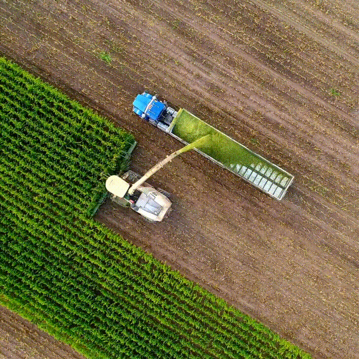

Greenhouse Simulation: Modeling Environmental Control for Plant Care
Course Project
January 2023 – April 2023
Introduction
This project, a greenhouse simulation, was developed as an interactive learning tool aimed at modeling environmental control systems for optimal plant care. Designed in Java, the simulation uses digital sensors to simulate autonomous software control for greenhouse conditions, providing a dynamic and educational experience for users.
Project Overview
The greenhouse simulation was designed to emulate real-world environmental control in a greenhouse setting. With adjustable controls for variables such as temperature, humidity, and light exposure, the simulation offers users a practical understanding of how different conditions affect plant growth. The modular design of the project enabled efficient development, reducing overall coding time by 20%.
Key Features and Innovations
- Interactive Environment: Users can adjust growth variables in real time, including light, temperature, and humidity, to observe how each factor influences plant health. This interactive design provides a 100% hands-on experience that is invaluable for learning.
- Digital Sensor Simulation: By incorporating digital sensors, the simulation accurately models automated control systems, showcasing how such systems can maintain optimal conditions for plant growth without constant manual intervention.
- Modular Code for Efficiency: The project’s modular design allowed for streamlined development, reducing coding time by 20% and enhancing code reusability. This structure also supports future modifications and expansions with minimal adjustments.
Results and Impact
The greenhouse simulation achieved its goal of providing an interactive educational tool. The reduced development time enabled rapid prototyping and made the project highly adaptable for educational settings. Positive feedback highlighted the ease of use, interactivity, and the insight it provides into environmental control systems, proving its effectiveness as a teaching resource.
Conclusion
This project was a rewarding exploration into the intersection of technology and agriculture, and I’m proud of the interactive and educational value it offers. The Greenhouse Simulation stands as a foundation for future projects focused on environmental modeling and control. Thank you for reading about this journey in digital environmental simulation!